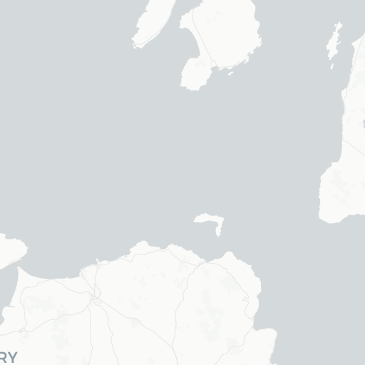

月
昼の月。ウィスキーリスト
AIソムリエ
ウィスキー一覧
🥃 コンプリートウィスキーコレクション
全
2
銘柄の詳細データベース
昼の月バーが誇る
厳選ウィスキーコレクション
を
自由に探索してお好みの一本を見つけてください
2
銘柄数
2
産地数
¥20,400〜¥80,400
価格帯
すべての産地
Scotland, Islay (1)
Scotland, Isle of Skye (1)
すべての価格帯
¥3,000以下
¥3,000〜¥5,000
¥5,000〜¥10,000
¥10,000〜¥20,000
¥20,000以上
すべての味わい
フルーティー (3+)
スモーキー (3+)
スパイシー (3+)
甘味 (3+)
複雑さ (4+)
表示件数:
10件
20件
50件
100件
フィルターをリセット
銘柄名
価格
産地
スモーキー
フルーティー
複雑さ
タリスカー 44年 オフィシャルボトル
¥80,400
Scotland, Isle of Skye
★
★
★
★
☆
★
★
★
☆
☆
★
★
★
★
★
ポートエレン 25年 one of only bottles
¥20,400
Scotland, Islay
★
★
★
★
★
★
★
☆
☆
☆
★
★
★
★
★
1 - 2 / 2
1
🍸 ウィスキー詳細情報
ポートエレン 25年 one of only bottles
Scotland, Islay
Single Malt Scotch Whisky
¥20,400
ポートエレン25年は希少で高く評価されるアイラウイスキーです。
味覚プロファイル
蒸溜所情報

+
−
Leaflet
|
©
OpenStreetMap
contributors ©
CARTO
ポートエレン蒸溜所
所在地:
Scotland
創業年:
1825
現在の状況:
閉鎖後再開（2024年3月再稼働）
1825年にA.K.マッカイ社によってアイラ島南部に設立。